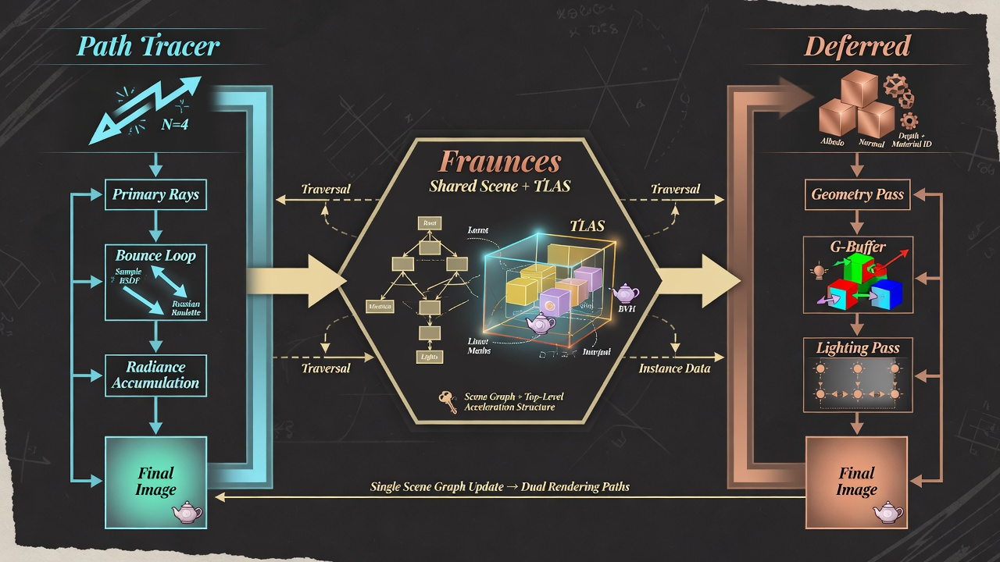

Monograph · 01 · Architecture
01
Foundations · deep dive
Architecture
Chapter contract
The wide-angle map: how a request becomes pixels, which modules own which phase, and the non-negotiable invariants. Deep module chapters hang off this spine.

Conceptual illustration — not engine output Teaching sketch of two formations on one spine.
End-to-end request path
- Parse CLI (model path, spp, mode, denoise)
- Construct
Scene; load assets into actors/components VulkanRenderer(w,h).initialize()— full GPU cold start (Ch. 03)setScene(scene)— upload meshes, materials, lights, BLAS/TLAS- Place camera; optional env map
setRenderMode(Deferred | RTOffline | …)— RT modes callensureRTRendererlazily- Loop or single shot:
render() - Read
getPixels()/ write PNG / present GLFW - Optional: denoise offline still via OIDN path inside PT
Nothing in that list requires an editor. The engine is a library with a fat GPU core.
Mode matrix
| Mode | Who draws | AS? | Readback |
|---|---|---|---|
| Forward | Legacy raster | no | staging |
| Deferred | DeferredRenderer graph | optional hybrid | staging |
| RTRealtime | PathTracer (PCG, few bounces) | required | staging + denoise opts |
| RTOffline | PathTracer (Sobol, OIDN path) | required | HDR accum → beauty |
Invariants (break these → silent wrong pixels)
- One scene language for deferred and PT (materials, lights, transforms)
- TLAS instance order locked to material table order
- Bindless indices valid or 0xFFFFFFFF “no texture”
- NRD packing uses YCoCg + norm hit-dist when NRD is on
- Frame ring: never read staging without waiting on that slot’s fence
- PathTracer profiles lazy — do not dual-allocate at 4K
Layer cake
| Layer | Owns | Deep chapter |
|---|---|---|
| Scene | Actors, components, loaders, physics world handle | 02 |
| GPU host | Device, upload, AS, ring, dispatch | 03 |
| Materials language | PBR + pack | 04 |
| Deferred formation | GBuffer → light → post | 05 |
| PT formation | Integrator + AOVs | 06–07 |
| Hybrid inject | RT shadow/GI into deferred | 08 |
| Denoise | OIDN/NRD/DLSS contracts | 09 |
| Audio / Physics | Sim & sound facades | 10–11 |
How to go deeper
- Want “what happens when I press run?” → Ch. 03 GPU init + this request path
- Want “why is my metal black?” → Ch. 04 + 05 IBL limits
- Want “why is noise structured like that?” → Ch. 06–07 NEE/MIS
- Want “why magenta after denoise?” → Ch. 09
Hover dotted terms (GGX, TLAS, …) or open the Glossary.
Design units in this module
Each card is a focused design page (what / how / why + sources). Full tree: Sitemap.